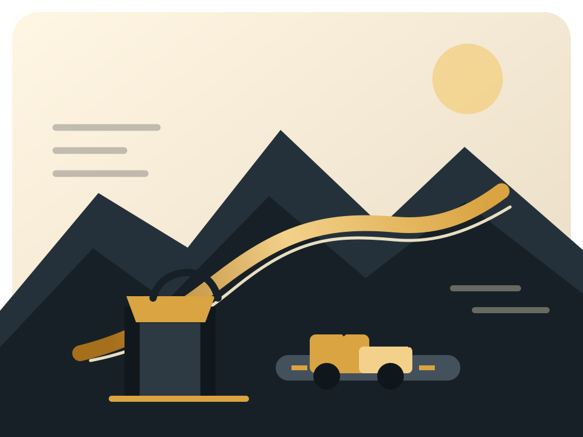
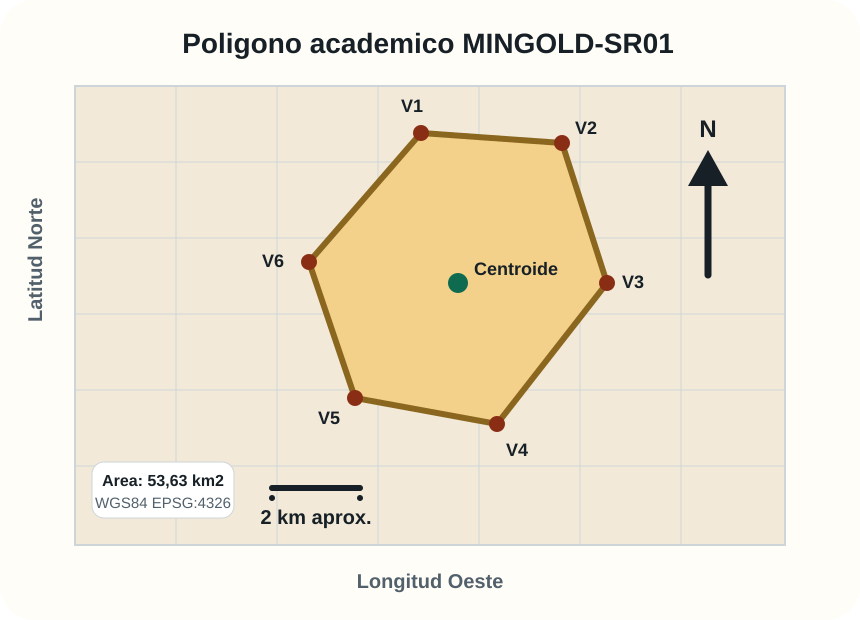
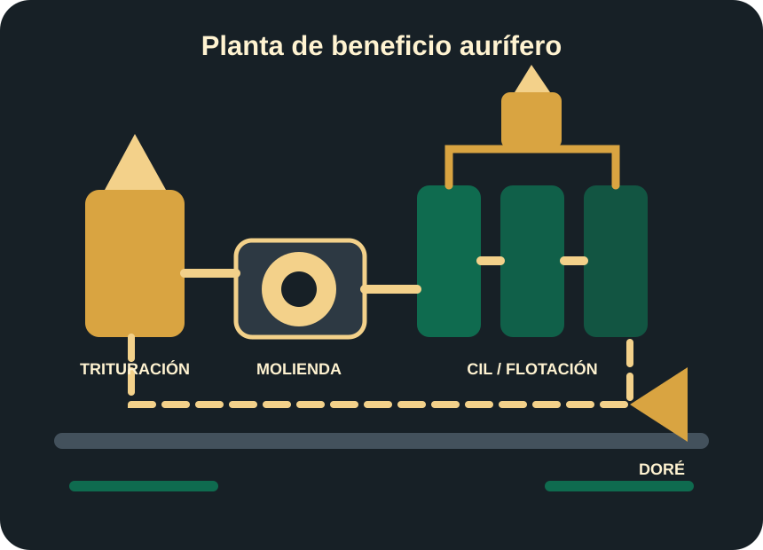
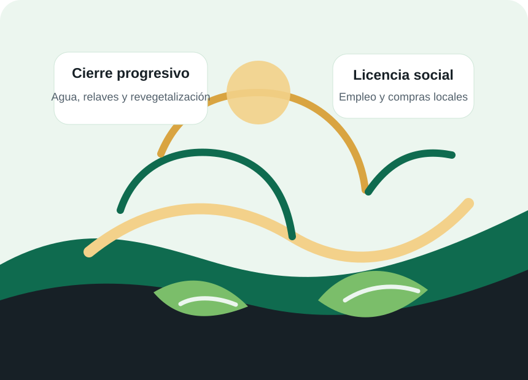
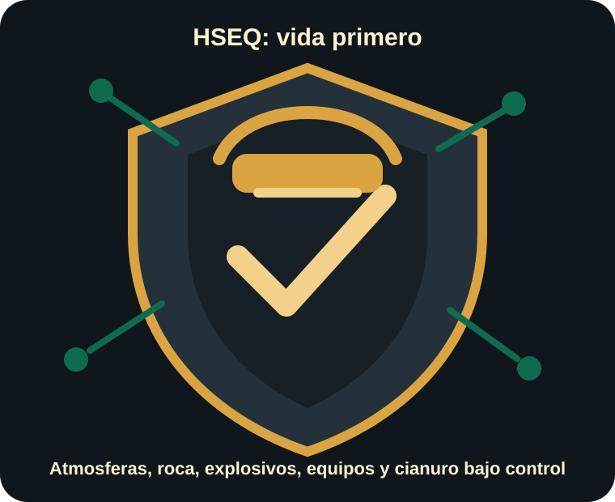

Nordeste de Antioquia, Colombia
Minería subterránea de oro con trazabilidad, seguridad y gestión integral.
MINGOLD es un diseño académico de empresa aurífera subterránea para una operación conceptual de 1.200 t/d, con enfoque en explotación selectiva, recuperación metalúrgica, HSEQ, cierre progresivo y licencia social.

Proyecto SR01
Un modelo integral para una mina aurífera subterránea.
El polígono académico MINGOLD-SR01 se ubica conceptualmente en la franja Segovia-Remedios, una provincia aurífera reconocida por mineralizaciones vetiformes y tradición minera subterránea.
Alcance del diseño
El proyecto integra localización geológica, estrategia corporativa, cadena de valor, estructura organizacional, sistema de gestión integrado, método de explotación, planta de beneficio, gestión legal, ambiental y cierre progresivo.
- Operación conceptual de mediana-gran escala.
- Explotación subterránea selectiva por corte y relleno.
- Producto comercial: doré de oro-plata trazable.
- Marco HSEQ alineado con ISO 9001, ISO 14001 e ISO 45001.

Extensión aproximada del polígono académico SR01.
Longitud aproximada del límite externo del área.
Longitud y latitud del punto central conceptual.
Coordenadas geográficas en EPSG:4326.
Geología y exploración
Hipótesis de yacimiento orogénico de oro.
El modelo geológico considera vetas subverticales de cuarzo-carbonato-sulfuros, alojadas en rocas intrusivas y unidades asociadas al flanco oriental de la Cordillera Central.
Blanco estructural
Lineamientos N-S a NNE-SSW, zonas de cizalla y fallas de segundo orden favorables para migración de fluidos hidrotermales.
Anomalía multivariable
La prioridad exploratoria se basa en el solapamiento de estructura, alteración, geoquímica Au-As-Sb-Ag-Pb y respuesta geofísica.
Validación por etapas
Cartografía 1:5.000, muestreo sistemático, geofísica, trincheras controladas y 3.000-5.000 m de perforación diamantina inicial.
Operación minera
Diseño subterráneo selectivo para controlar dilución y seguridad.
El método base es corte y relleno mecanizado, adecuado para vetas subverticales de potencia variable y leyes relativamente altas.
Desarrollo
Rampa principal, galerías de nivel, cruceros hacia veta y chimeneas de ventilación y servicios.
Producción
Perforación, voladura controlada, cargue con LHD, transporte y sostenimiento sistemático.
Servicios mina
Ventilación principal y secundaria, bombeo, energía, comunicaciones, refugios y control de accesos.
Relleno
Relleno hidráulico o en pasta para estabilidad, continuidad operativa y reducción de vacíos.
Planta de beneficio
Recuperación combinada para oro libre y oro asociado a sulfuros.
El circuito conceptual integra trituración, molienda, gravimetría, flotación selectiva, CIL, elución, electrodeposición, fundición y disposición de relaves.
Contenido promedio de oro usado para el caso de diseño.
Meta anual de recuperación metalúrgica del circuito.
Barra semirrefinada enviada a refinador certificado.

Sostenibilidad
Gestión ambiental desde el diseño hasta el cierre.
La propuesta prioriza agua, relaves, cianuro, material estéril, biodiversidad, residuos y cierre progresivo como controles centrales de licencia ambiental y social.

Agua y vertimientos
Balance hídrico, recirculación de agua de proceso, tratamiento antes de descarga y monitoreo aguas arriba y abajo.
Relaves y cianuro
Contención secundaria, destrucción de cianuro, monitoreo de CN WAD, instrumentación geotécnica y plan de emergencia.
Cierre progresivo
Revegetalización, estabilización física, cierre de bocaminas, control de drenaje ácido y garantías financieras.
Seguridad HSEQ
Vida primero: controles críticos antes que producción.
La Gerencia HSEQ reporta directamente al CEO y tiene autoridad para detener trabajos por atmósferas peligrosas, sostenimiento deficiente, explosivos, energía peligrosa, cianuro o condiciones geomecánicas anómalas.
El sistema considera el Decreto 1886 de 2015 y sus modificaciones aplicables, incluido el Decreto 944 de 2022.
- Cero fatalidades como condición de gestión.
- TRIFR objetivo menor a 2,0.
- Permisos de alto riesgo y bloqueo-etiquetado.
- Brigada de rescate minero y central de emergencias.

Organización
Arquitectura robusta para una operación 24/7.
El organigrama definitivo propone 814 personas directas para operación 24/7 y separa funciones críticas para evitar conflictos de interés entre producción, seguridad, mantenimiento, ambiente y control técnico.
Junta Directiva
Gerencia General / CEO
Operaciones Mina
Planta y Metalurgia
Técnica y Servicios
Mantenimiento
HSEQ
Ambiental y Sostenibilidad
Administrativa y Financiera
Operación y planta
Mina, planta y mantenimiento concentran la ejecución física, disponibilidad de activos, producción y recuperación metalúrgica.
Control técnico
Geología, planeamiento, geotecnia, hidrogeología y topografía protegen el recurso mineral y la estabilidad del macizo.
Gobierno y soporte
Finanzas, talento humano, legal, TI, abastecimiento, seguridad física, auditoría y cumplimiento sostienen la continuidad operativa.
Indicadores estratégicos
Metas medibles para convertir estrategia en ejecución.
| Indicador | Meta | Responsable |
|---|---|---|
| Producción anual de oro | > 55.000 oz/añoDesde el año 4 | Gerencia de Operaciones |
| Costo operativo unitario | < 850 USD/oz AuCosto operativo objetivo | CFO |
| Recuperación metalúrgica | ≥ 92%Promedio anual | Jefe de Planta |
| Fatalidades | 0Meta obligatoria de gestión | Gerencia General / HSEQ |
| Recirculación de agua | ≥ 75%Agua de proceso recirculada | Jefatura Ambiental |
| Empleo local | ≥ 60%Cargos no especializados | RRHH / Comunidad |
HSEQ
Salud, seguridad, ambiente y calidad; integra controles para proteger personas, operación y cumplimiento.
SGI
Sistema de Gestión Integrado; articula calidad, ambiente, seguridad y mejora continua.
TRIFR
Tasa de frecuencia de lesiones registrables por millón de horas trabajadas.
CIL
Carbon in Leach; proceso metalúrgico de lixiviación con carbón activado para recuperar oro.
LHD
Load-Haul-Dump; equipo bajo perfil para cargar, transportar y descargar mineral en mina subterránea.
WGS84
Sistema geodésico mundial usado para expresar coordenadas de longitud y latitud.
Documentos y datos
Archivos del proyecto listos para consulta y publicación.
La web referencia los documentos técnicos del proyecto e incluye archivos espaciales en KML y GeoJSON para consulta SIG.
Nota de alcance
Proyecto académico de prefactibilidad conceptual.
El polígono, la condición de no superposición con títulos mineros y las proyecciones operativas deben entenderse como simulación académica. Una implementación real requiere verificación en ANNA Minería, Registro Minero Nacional y estudios geológicos, mineros, ambientales, sociales, legales y financieros de detalle.